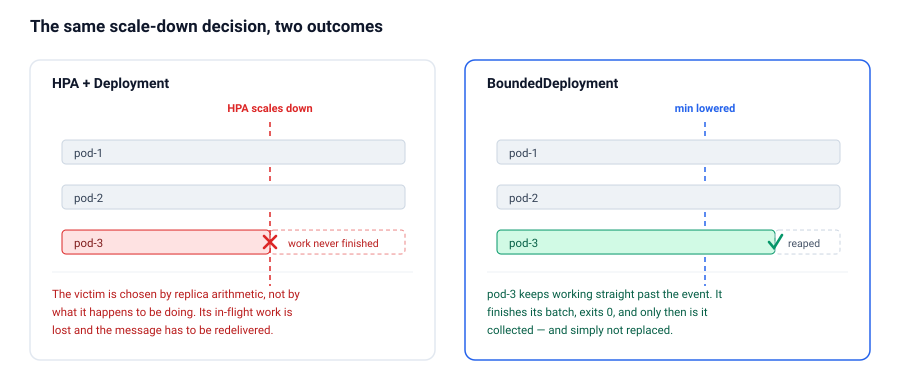
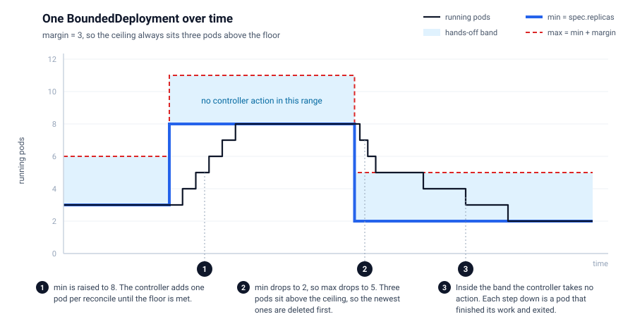
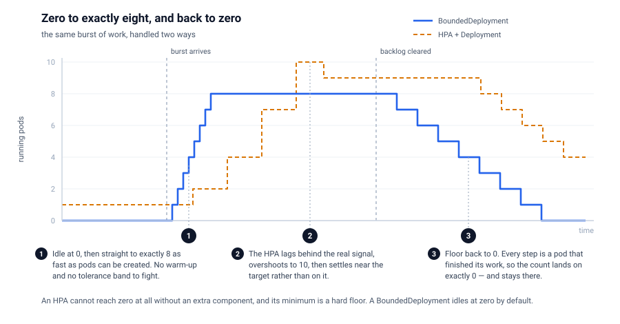
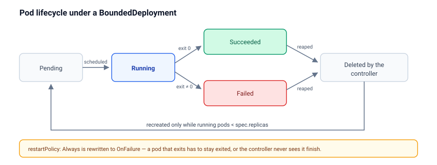
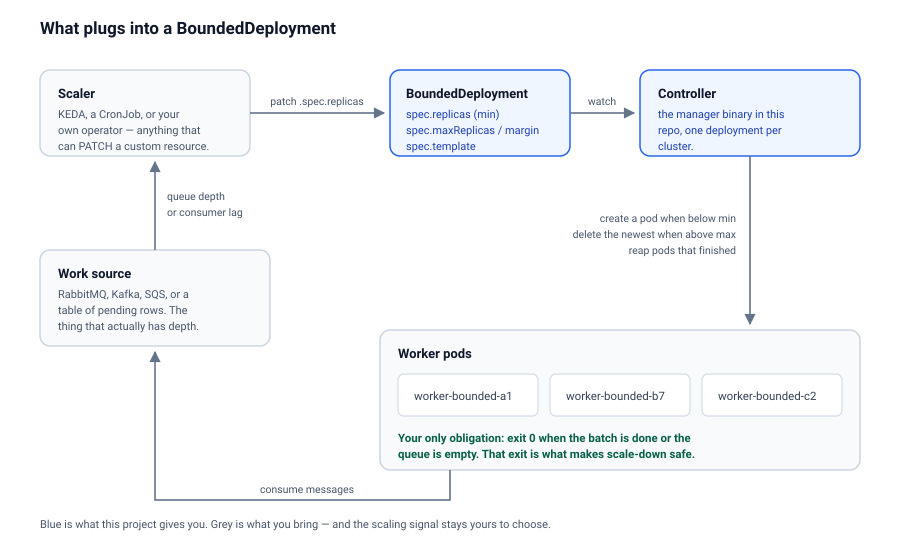

Why not just use an HPA?
The HorizontalPodAutoscaler is a good fit for stateless request handlers, where any pod is as disposable as any other and CPU tracks load closely. For queue workers, batch consumers and long jobs, two of its properties actively hurt.
It terminates pods that are busy. Scaling down means choosing victims, and the
choice is made on replica arithmetic — nothing in it knows that one pod is ninety seconds into a
four-minute job. The work in flight is lost, the message goes back on the queue, and the job is
done twice. Teams usually paper over this with long terminationGracePeriodSeconds
and careful SIGTERM handling, which turns every worker into a small
distributed-systems problem.
It scales on metrics that only correlate with the thing you care about. CPU and memory are proxies for load. A worker blocked on a slow database is nearly idle by CPU and completely saturated in reality. You end up tuning thresholds against a signal that was never the signal.
BoundedDeployment inverts both. The scale-up signal comes from whatever you decide is authoritative — queue depth, consumer lag, a backlog count — because you set the floor. Scale-down is by attrition: the pod finishes, exits, and simply is not replaced.

How it works
The controller watches each BoundedDeployment and its pods, and applies three rules.
| Situation | What the controller does |
|---|---|
Running pods below spec.replicas | Creates one pod per reconcile until the floor is met |
| Running pods between floor and ceiling | Nothing |
| Running pods above the ceiling | Deletes the newest pod, one per reconcile |

The floor is spec.replicas. The name is inherited from Deployment, but
the meaning is different: it is a minimum, not a target. The ceiling is
spec.maxReplicas if you set it, otherwise spec.replicas + spec.margin.
If you set neither, there is no ceiling.
When the controller does have to delete a pod for being over the ceiling, it deletes the newest one — the pod with the least work invested in it, so the pods furthest through their work are the ones left alone. It is the only deletion heuristic here, and unlike a ReplicaSet, which reaches for it only as a tiebreaker after readiness and node spread, it is the whole policy.
On top of the three rules, the controller collects pods that have reached Succeeded
or Failed and deletes them. That reaping is what makes the whole thing move: a
finished pod is removed, and if that drops the count below the floor, a fresh one takes its place.
The margin is a scale-down budget
The gap between floor and ceiling is the number of surplus pods you are willing to pay for while
you wait for them to finish on their own. Drop the floor from 10 to 2 with margin: 3
and the ceiling becomes 5: the three pods above the ceiling are deleted right away, and the
remaining five are left to drain naturally down to 2.
Set a large margin and nothing is ever force-deleted, at the cost of running surplus pods for
longer. Set margin: 0 and the resource behaves like a strict replica count, killing
on every scale-down — which is exactly the behaviour you came here to avoid.
Zero to X, precisely
spec.replicas: 0 is a valid resting state, and it is the default. A
BoundedDeployment with a floor of zero runs no pods and costs nothing, while keeping the pod
template, the ceiling and the resource itself in place, ready to go.

Going from 0 to X is one patch:
kubectl patch boundeddeployment semantic-indexer -n dev \
--type merge -p '{"spec":{"replicas":8}}'You get exactly eight. Three properties combine to make that true:
It converges immediately, not on a polling interval. The controller watches the pods it owns, so every pod creation wakes the next reconcile. Pods are created one per reconcile, back to back, as fast as the API server and scheduler will take them — there is no metrics scrape interval and no sync period in the path.
The number is the number. There is no tolerance band and no averaging. An HPA has a 10% tolerance by default and a 300-second scale-down stabilization window, so it settles near a target rather than on it; ask for eight and you may sit at nine for a while. Here, the floor is a floor.
Zero is reachable in both directions. An HPA's minReplicas cannot
be zero without an extra component — HPAScaleToZero is still a feature gate, which
is a large part of why people reach for KEDA. Set the floor back to 0 and pods
finish, get collected, and are not replaced. The count lands on exactly zero and stays there.
Coming down to zero you have two options:
| You want | Set | Result |
|---|---|---|
| Graceful drain | replicas: 0, margin: N | Up to N pods keep running until they finish their work. Nothing is killed. |
| Immediate stop | replicas: 0, maxReplicas: 0 | The ceiling is zero, so every pod is deleted now, finished or not. |
For a bursty workload — a nightly import, an on-demand reindex, a batch that arrives when a customer uploads something — this gives you the shape you actually want: nothing running at rest, exactly the parallelism you asked for while the work exists, and a clean return to nothing once it is done, with no half-finished jobs thrown away on the way down.
The contract: your pod has to be able to exit
This is the one real constraint, and everything above depends on it.

A BoundedDeployment pod is expected to do some work and then exit 0 — when its batch is done, when the queue comes up empty, or after a self-imposed lifetime. A pod that runs forever is never collected, so the count never falls and scale-down never happens.
restartPolicy: Always is rewritten to OnFailure on the resource itself, and the
controller logs that it did. Under Always the kubelet restarts a container that
exits cleanly, so the pod never reaches Succeeded and the controller never sees it
finish.
This makes BoundedDeployment a good fit for queue consumers, batch and ETL workers, scheduled importers, and inference or indexing jobs. It is a poor fit for long-lived HTTP servers — see What this is not.
Install
The controller is a single deployment plus one CRD, and it is namespace-agnostic.
From a release
kubectl apply -f https://github.com/stonal-tech/k8s-bounded-deployment/releases/latest/download/install.yaml
This installs the CRD and the controller into the k8s-bounded-deployment-system
namespace. Images are published to ghcr.io/stonal-tech/k8s-bounded-deployment.
From source
git clone https://github.com/stonal-tech/k8s-bounded-deployment.git
cd k8s-bounded-deployment
make install
make deploy IMG=ghcr.io/stonal-tech/k8s-bounded-deployment:latest
make install applies just the CRD; make deploy adds the controller. To
build and push your own image instead, use
make docker-build docker-push IMG=<your-registry>/<name>:<tag> and
pass the same IMG to make deploy.
Verify, and uninstall
kubectl get crd boundeddeployments.deploy.stonal.io
kubectl -n k8s-bounded-deployment-system get deploy
make undeploy
make uninstallConfiguration
apiVersion: deploy.stonal.io/v1
kind: BoundedDeployment
metadata:
name: semantic-indexer
spec:
replicas: 2 # the floor: never fewer than this
margin: 3 # ceiling = replicas + margin = 5
template:
metadata:
labels:
app: semantic-indexer
spec:
restartPolicy: OnFailure
containers:
- name: worker
image: ghcr.io/example/semantic-indexer:1.4.0
env:
- name: EXIT_WHEN_QUEUE_EMPTY
value: "true"Spec
| Field | Type | Required | Meaning |
|---|---|---|---|
replicas | integer | no (defaults to 0) | The floor. The controller creates pods until this many are running. |
maxReplicas | integer | no | Absolute ceiling. Must be greater than or equal to replicas. |
margin | integer | no | Ceiling expressed as a distance above the floor. Ignored when maxReplicas is set. |
template | PodTemplateSpec | yes | The pod to run. Must declare at least one container. |
If both maxReplicas and margin are absent there is no ceiling, and
surplus pods are only ever removed by finishing. That is a legitimate configuration, but an
explicit ceiling is the safer default.
Status
| Field | Meaning |
|---|---|
replicas | Pods currently alive and not terminating |
readyReplicas | Of those, how many pass their readiness probe |
templateHash | Hash of the current pod template |
$ kubectl get bd # "bd" is the registered short name
NAME MIN MAX MARGIN CURRENT READY
semantic-indexer 2 3 4 4What the controller puts on your pods
Pods are named <boundeddeployment-name>-bounded-<suffix>, carry the label
deploy.stonal.io/boundeddeployment: <name>, and carry the annotation
deploy.stonal.io/template-hash. Ownership is set for garbage collection, so deleting
the BoundedDeployment deletes its pods. The label is also how the controller finds pods, so do not
remove or overwrite it in your template.
Driving it from a real signal
The controller deliberately has no opinion about when to scale. It reconciles toward the floor you give it; deciding the floor is your job, and that is where the precision comes from.

With a message queue
The natural pairing. A sidecar, a CronJob, or KEDA reads the queue depth and patches the floor; the workers consume, and each one exits 0 once the queue is drained or its batch is complete.
apiVersion: keda.sh/v1alpha1
kind: ScaledObject
metadata:
name: semantic-indexer
spec:
scaleTargetRef:
apiVersion: deploy.stonal.io/v1
kind: BoundedDeployment
name: semantic-indexer
triggers:
- type: rabbitmq
metadata:
queueName: semantic-index
mode: QueueLength
value: "50"
KEDA drives this through the /scale subresource, which is not
enabled on the CRD today — see Known gaps. A small controller or CronJob
issuing kubectl patch works right now.
With any other system
Anything that can PATCH a custom resource can drive it: a cron that raises the floor
before a nightly import and lowers it afterwards, an application that knows its own backlog, or a
webhook from an upstream pipeline. Because the floor is just a number in a spec, the scaling
policy stays in the system that actually understands the load.
Adopting an existing Deployment
A second controller can convert a Deployment in place. Annotate it:
metadata:
annotations:
stonal.io/bounded-enabled: "true"
stonal.io/bounded-margin: "3" # or stonal.io/bounded-max: "10"
The controller creates a BoundedDeployment with the same name and pod template, copies
spec.replicas across as the floor, and then scales the original Deployment
to zero. Setting either bounded-margin or bounded-max is enough
to enable it; bounded-enabled: "false" disables it explicitly.
Treat this as a one-way migration aid rather than a live bridge: the conversion happens once, and later edits to the Deployment are not propagated. Read Known gaps before pointing it at anything you care about.
Operating
Watch a resource move, and list the pods belonging to one:
kubectl get boundeddeployments -A -w -o jsonpath='{.metadata.namespace}:{.metadata.name} - SPEC: replicas:{.spec.replicas}, maxReplicas:{.spec.maxReplicas} - STATUS: replicas:{.status.replicas}, readyReplicas:{.status.readyReplicas}{"\n"}'
kubectl get pods -l deploy.stonal.io/boundeddeployment=semantic-indexerController logs are the fastest way to understand a decision — every create, delete and reap is logged with its reason:
kubectl -n k8s-bounded-deployment-system logs deploy/k8s-bounded-deployment-controller-manager -fController flags
| Flag | Default | Purpose |
|---|---|---|
--health-probe-bind-address | :8081 | Liveness and readiness endpoints |
--metrics-bind-address | 0 (disabled) | Set to :8443 for HTTPS or :8080 for HTTP |
--metrics-secure | true | Serve metrics over HTTPS with authn/authz |
--leader-elect | false | Enable leader election for HA |
--enable-http2 | false | Off by default to avoid the HTTP/2 Rapid Reset CVEs |
What this is not
Being clear about the boundaries is more useful than a feature list.
- It is not a Deployment replacement. There is no rolling update. When you change
spec.template, every pod whose template hash no longer matches is deleted in the same pass — all of them, at once — and replacements are then created one per reconcile. For a worker fleet that is usually fine. For anything serving traffic it is an outage. - It has no surge, no
maxUnavailable, no PodDisruptionBudget integration. Availability during a template change is whatever your queue's redelivery semantics give you. - It does not decide when to scale. There is no metrics adapter and no queue integration in this repo. Something else sets the floor.
- It does not manage a Service, and pods are not fungible endpoints. Pods come and go by design, on their own schedule.
Known gaps
Honest accounting of what is rough, as of this writing:
- No
/scalesubresource on the CRD, sokubectl scaleand KEDA's generic scaler cannot target a BoundedDeployment yet. Usekubectl patch. - The Deployment adoption controller is one-shot. It creates the BoundedDeployment and never updates it, so later changes to the source Deployment do not propagate — but it does keep the Deployment scaled to zero.
- No rolling update, as described above.
- The test suite is largely Kubebuilder scaffolding. The generated specs assert almost nothing about the reconcile logic.
- No conditions on status, so
kubectl wait --for=condition=...has nothing to wait on.